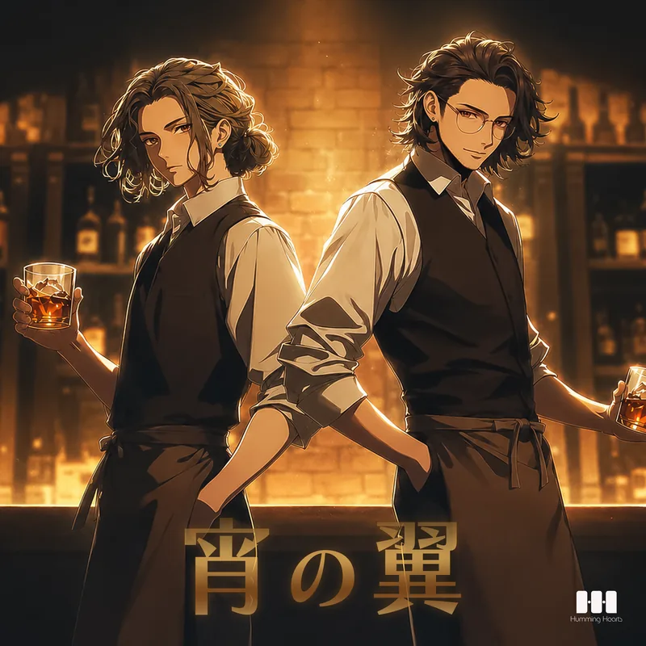
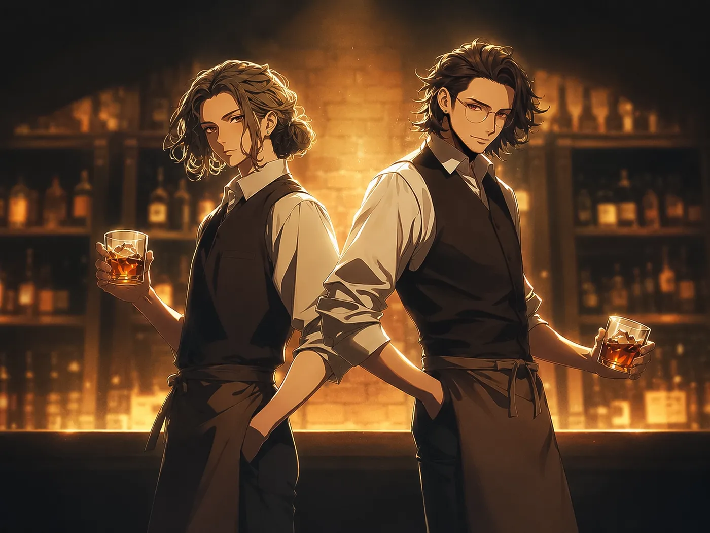

Release2026.08.22Lyrics & Music月嶺隼瞳宵の翼
NocturnalFizz
猛禽兄弟 × ジャズ
夜へといざなう、大人の兄弟デュオ

バー「夜鶯楼」を営む月嶺兄弟による、ジャズを中心としたデュオユニット。
兄・有智と弟・隼瞳が重ねるコーラスは、深みのある響きと、ほのかに漂う色気が魅力で、不定期に開催されるバーでのミニライブは、毎回満席になるほどの人気を集めている。
作詞作曲を手がける隼瞳は、自分の魅力に少し無頓着な兄を、音楽活動を通してさりげなくプロデュースしているとか、いないとか。

Release2026.08.22Lyrics & Music月嶺隼瞳NocturnalFizz